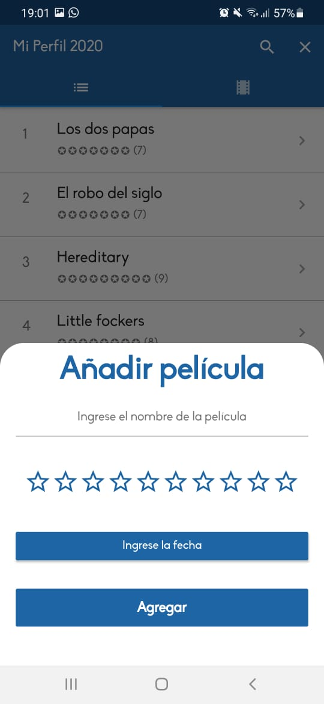
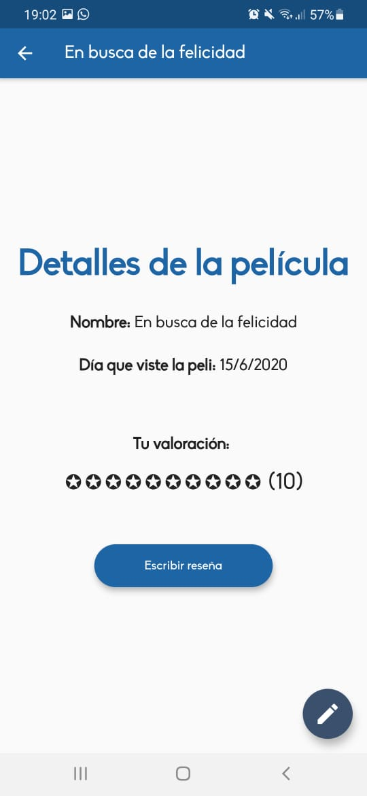

Pelibry




Mobile app made with Flutter.
Manejo de usuarios y base de datos alojada en Firebase.
Databases hosted in Firebase
Pelibry is an application that allows you to record each of the movies you watch. You register with your email, enter a username and you can start interacting with the app.
When adding a movie, all you have to do is indicate: the name of the movie, a rating, and the day it was seen. Once the movie has been saved, it will be displayed in a list sorted by viewing date. The user's profile has two sections: the list of movies and the reviews the user wrote.
In addition, the application allows you to see the list of movies of the rest of the users of the app. You can search for your friend's username and look at their list and reviews.